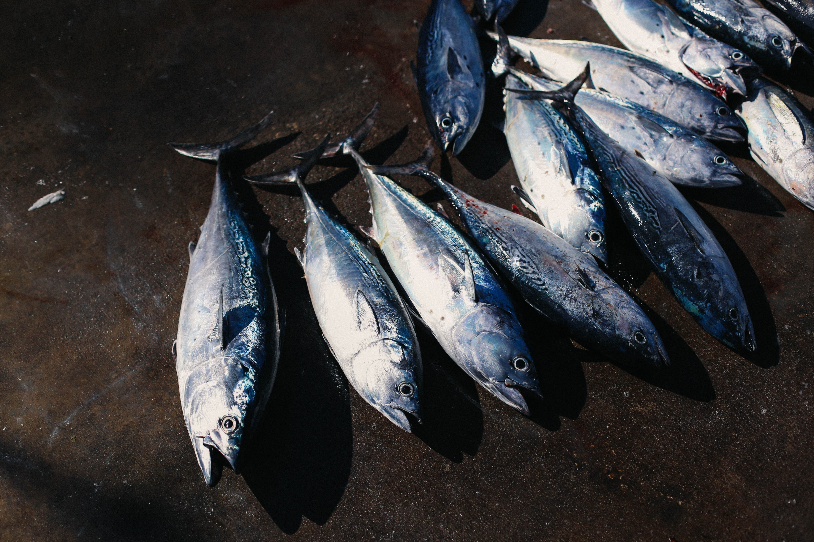
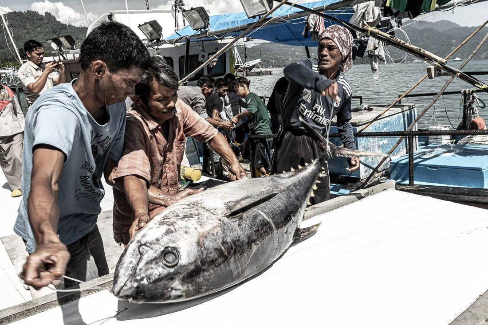
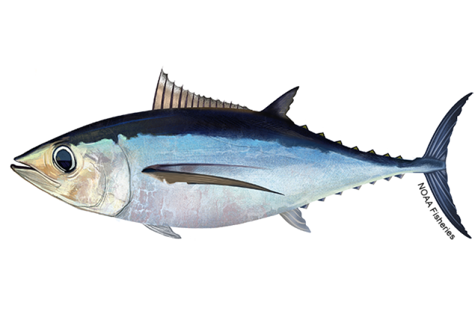
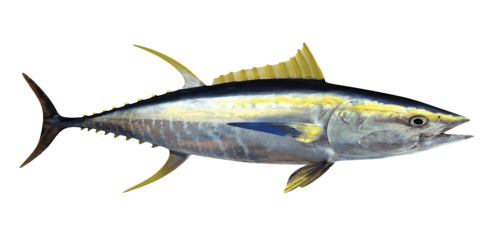
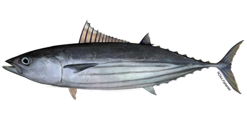

Rumah
Halaman
Pekerjaan
Register
Login
Tutup ×
1 / 3
2 / 10
3 / 10

4 / 10

4/4
</div> <a class="prev" onclick="plusSlides(-1)">❮</a> <a class="next" onclick="plusSlides(1)">❯</a> </div> <br> <div style="text-align:center"> <span class="dot" onclick="currentSlide(1)"></span> <span class="dot" onclick="currentSlide(2)"></span> <span class="dot" onclick="currentSlide(3)"></span> <span class="dot" onclick="currentSlide(4)"></span> <span class="dot" onclick="currentSlide(5)"></span> <!--</div>--> <!-- </div>--> </div> <div class="penampung" style="margin-top:10px;"> <div class="baris"> <div class="kolom-12 kolom-xl-8"> <h1 class="ikan">Apa itu ikan tuna?</h1> <p>Tuna adalah ikan laut pelagik yang termasuk tribus Thunnini, terdiri dari beberapa spesies dari famili skombride, terutama genus Thunnus. Ikan ini adalah perenang andal. Tidak seperti kebanyakan ikan yang memiliki daging berwarna putih, daging tuna berwarna merah muda sampai merah tua</p> <ul class="navigasi-icon text-center"> <li> <a href="#"> <svg width="24" height="24"> <use xlink:href="#email" /> </svg> </a> </li> <li> <a href="#"> <svg width="24" height="24"> <use xlink:href="#whatsapp" /> </svg> </a> </li> <li> <a href="#"> <svg width="24" height="24"> <use xlink:href="#facebook" /> </svg> </a> </li> </ul> </div> <!--<div class="kolom-12 kolom-xl-4">  </div> --> </div> <hr /> <div class="baris"> <div class="kolom-12"> <h1>ANEKA IKAN TUNA</h1> </div> <div class="kolom-12 kolom-md-6 kolom-lg-6 kolom-xl-4"> <div class="kartu">  <div class="penampung-kartu"> <h2>SKIPJACK</h2> <p>Sejatinya, inilah adalah ikan cakalang (Katsuwonus pelamis) sesungguhnya. Ikan dengan Familia Scombroidae dan Genus Katsuwonus ini adalah primadona dari Pantai Selatan Jogjakarta.</p> <ul class="navigasi-icon text-center"> <li> <a href="#"> <svg width="24" height="24"> <use xlink:href="#like" /> </svg> Like </a> </li> <li> <a href="#"> <svg width="24" height="24"> <use xlink:href="#comment" /> </svg> Komentar </a> </li> <li> <a hre="#"> <svg width="24" height="24"> <use xlink:href="#share" /> </svg> Share </a> </li> </ul> </div> </div> </div> <div class="kolom-12 kolom-md-6 kolom-lg-6 kolom-xl-4"> <div class="kartu">  <div class="penampung-kartu"> <h2>YELLOWFIN</h2> <p>Ikan Madidihang atau tuna sirip kuning (Thunnus albacares) adalah sejenis ikan pelagis besar yang mengembara di lautan tropika dan ugahari di seluruh dunia. Ikan ini merupakan salah satu jenis tuna yang terbesar, meski masih kalah besar jika dibandingkan dengan tuna sirip biru dan tuna mata besar</p> <ul class="navigasi-icon text-center"> <li> <a href="#"> <svg width="24" height="24"> <use xlink:href="#like" /> </svg> Like </a> </li> <li> <a href="#"> <svg width="24" height="24"> <use xlink:href="#comment" /> </svg> Komentar </a> </li> <li> <a hre="#"> <svg width="24" height="24"> <use xlink:href="#share" /> </svg> Share </a> </li> </ul> </div> </div> </div> <div class="kolom-12 kolom-md-6 kolom-lg-6 kolom-xl-4"> <div class="kartu"> <img src="image/1.gif" /> <div class="penampung-kartu"> <h2>ALBACORE</h2> <p>Albakora (Thunnus alalunga), adalah spesies ikan tuna yang termasuk anggota famili Skombride. Spesies ini juga disebut tuna albakora, albakor, tuna jabrig, madidiang albakoro, suree, aji-aji, trakulu, kwandang, cucut jenggot, albi, tombo ahi, binnaga, albakora pasifik, bonito jerman, sirip panjang, tuna sirip panjang, atau bahkan hanya tuna</p> <ul class="navigasi-icon text-center"> <li> <a href="#"> <svg width="24" height="24"> <use xlink:href="#like" /> </svg> Like </a> </li> <li> <a href="#"> <svg width="24" height="24"> <use xlink:href="#comment" /> </svg> Komentar </a> </li> <li> <a hre="#"> <svg width="24" height="24"> <use xlink:href="#share" /> </svg> Share </a> </li> </ul> </div> </div> </div> </div> </div> <div class="footer"> <h1 class="nama">ikan tuna</h1> <p> SKIPJACK </p> <p> ALBACORE </p> <p> YELLOWFIN </p> <B> TESSS</B> </div> <script> let slideIndex = 0; showSlides(); function showSlides() { let i; let slides = document.getElementsByClassName("mySlides"); let dots = document.getElementsByClassName("dot"); for (i = 0; i < slides.length; i++) { slides[i].style.display = "none"; } slideIndex++; if (slideIndex > slides.length) {slideIndex = 1} for (i = 0; i < dots.length; i++) { dots[i].className = dots[i].className.replace(" active", ""); } slides[slideIndex-1].style.display = "block"; dots[slideIndex-1].className += " active"; setTimeout(showSlides, 2000); // Change image every 2 seconds } </script> <script type = "text/JavaScript"> <!-- function AutoRefresh( t ) { setTimeout("location.reload(true);", t); } //--> </script> </body> </html>